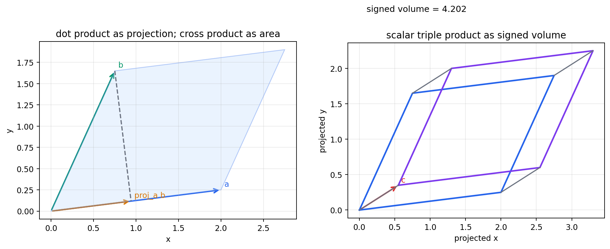

Source Span
Printed pages 307-327; PDF pages 325-345.
Central Move
Replace static shape description by measurements made along a moving point.
Chapter Evidence
Vector identities, curvature formulas, tangent constraints, and frame orthogonality are numerically checked.
